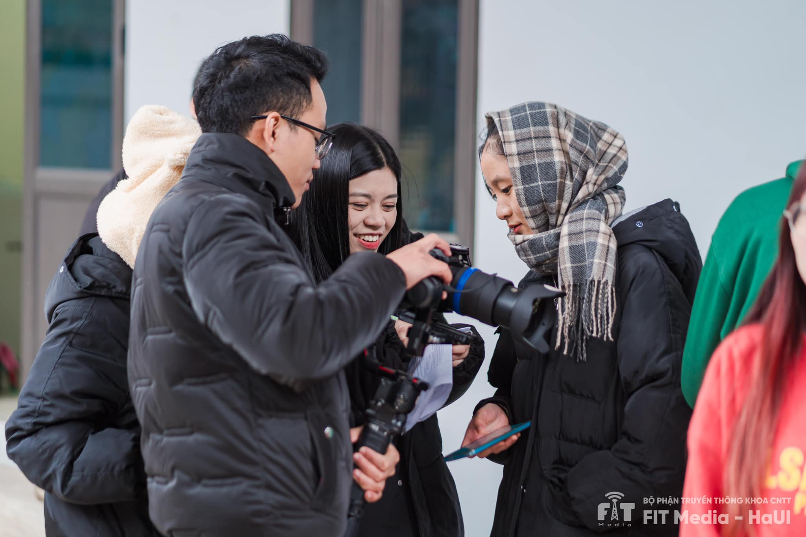
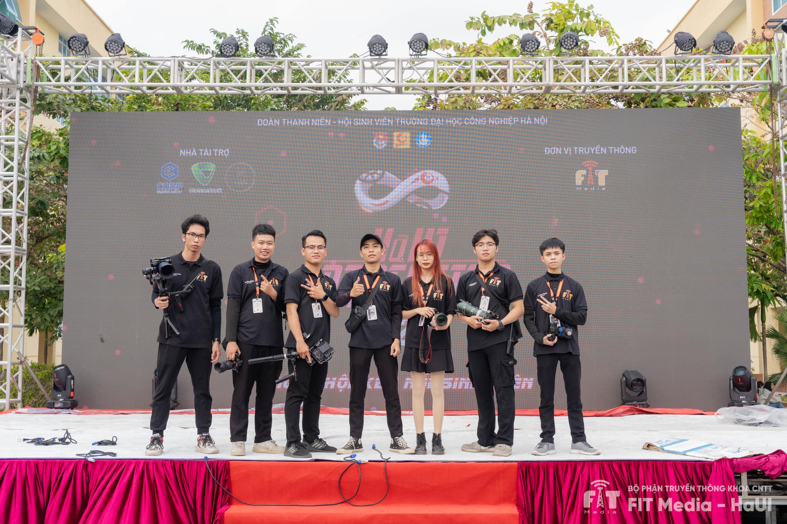
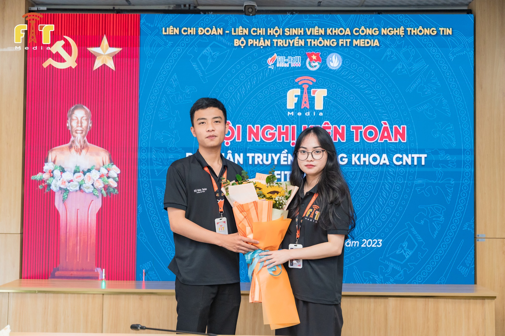
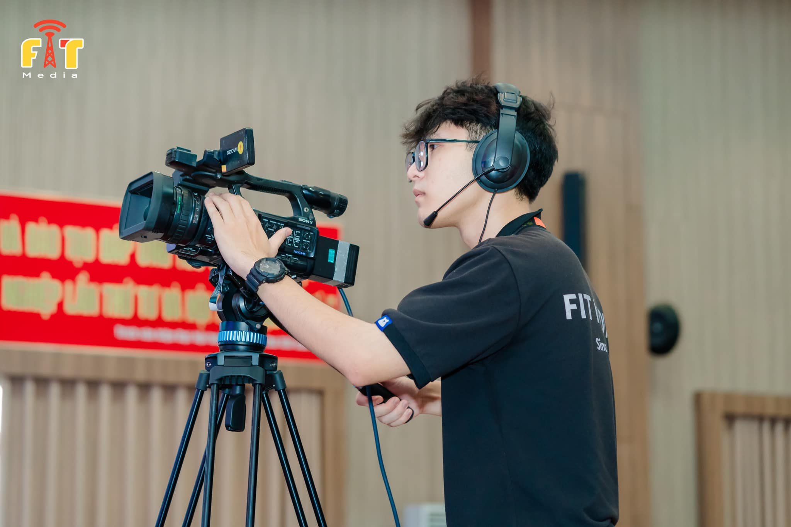
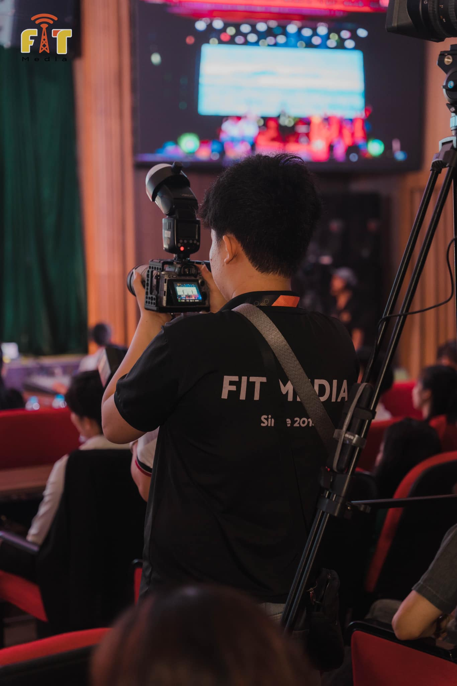

⚡Được thành lập vào ngày 17/05/2014, FIT Media là một trong những đơn vị tiên phong trong việc tổ chức và hỗ trợ các chương trình, sự kiện trong và ngoài trường.
Trong suốt chiều dài 8 năm phát triển, FIT Media đang từng bước từng bước khẳng định vị trí của mình tại trường
Đại học Công nghiệp Hà Nội.
⚡Mang trong mình sứ mệnh là một bộ phận truyền thông, FIT Media luôn là kênh cung cấp thông tin kịp thời và
chính xác nhất cho sinh viên trường Đại học Công Nghiệp Hà Nội nói chung và sinh viên khoa CNTT nói riêng.
Không chỉ dừng lại ở đó, bộ phận truyền thông FIT Media còn góp phần đem lại tiếng cười thư giãn cho các bạn
sinh viên sau những giờ học căng thẳng bằng các ấn phẩm độc đáo, thú vị như FIT News, FIT Fun, FIT Games, …
⚡Hiện tại, Bộ phận truyền thông khoa CNTT – FIT Media được chia thành 3 ban hoạt động: Biên tập, Kỹ thuật và
Tổ chức sự kiện.
✍️Ban Biên tập: Được coi là mắt xích quan trọng, điểm khởi nguồn của các ấn phẩm.
Chúng mình cùng nhau xây dựng những chiến lược truyền thông, lên những ý tưởng độc đáo, các ấn phẩm
“ triệu view”, thể hiện tài năng MC góp phần cho sự phát triển của đội.
📸Ban Kỹ thuật: Nơi ra đời của những thước phim kinh điển, những bộ ảnh kỉ niệm. Những con người luôn đứng
sau sự thành công của nhiều chương trình như Chào tân sinh viên, IT Festival, FIT Media Workshop…
🎪Ban Tổ chức sự kiện: Đóng vai trò quan trọng, xuyên suốt trong các sự kiện lớn nhỏ của FIT Media và
là một mắt xích không thể thiếu trong việc gắn kết các thành viên lại với nhau.

⚡FIT Media luôn có mặt, hỗ trợ tại tất cả các chương trình của khoa CNTT cũng như của
trường Đại học Công nghiệp Hà Nội. Không chỉ vậy, FIT Media còn tham gia hỗ trợ truyền thông,
bảo trợ hình ảnh các chương trình lớn, ở cả trong trường cũng như là tại các trường trong khu vực.
⚡Sở hữu cho mình fanpage gần 38k follow cùng kênh TikTok với hơn 29k followers,
FIT Media đã và đang khẳng định được vị thế của một trong những đội truyền thông dẫn đầu tại HaUI.







